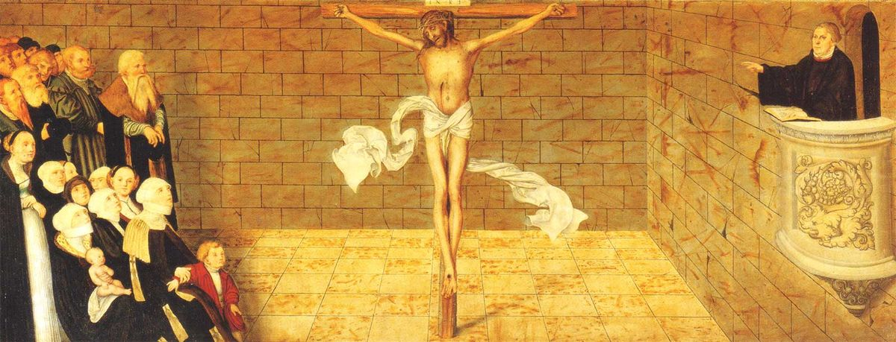

Toen God Adam schiep en in het paradijs een plek gaf, had Adam niet alleen een biologische relatie met de mensheid, maar ook een verbonds- of wettelijke relatie. De Bijbel verklaart dat Adam het wettige verbondshoofd was van al zijn nakomelingen. Dit betekent dat hij voor elk van ons als onze vertegenwoordiger op onze plaats in de tuin stond. Door zijn zondeval vielen al zijn nakomelingen, met uitzondering van Christus, en zondigden in hem (Romeinen 5:12-14).
Met als resultaat dat alle mensen geboren zijn in zonde. En daarom kan de mens Gods gerechtigheid dat door Zijn wet wordt geëist niet vervullen (Psalm 51:5; Romeinen 3:23).
Het hart van de mens is goddeloos en bedrieglijk boven alles (Genesis 8:21; Prediker 9:3; Jeremia 17:9). De mens heeft de zonde lief en kan zich niet onderwerpen aan Gods wet, en evenmin kan de mens de dingen van de Heilige Geest ontvangen, omdat ze dwaasheid voor hem zijn (Romeinen 3:9-20; 8:7; 1 Korintiërs 2:14). De mens is totaal niet in staat om de zondeschuld af te betalen die zij God verschuldigd zijn. God die perfecte gerechtigheid, absoluut volmaakte gehoorzaamheid aan de Wet, of anders een eeuwig oordeel als gevolg van zonde eist.
Maar God, die rijk is aan barmhartigheid, stond het niet toe dat de hele mensheid zonder uitzonderingen in deze ellendige toestand zou worden achtergelaten. De Drie-enige God koos zijn uitverkoren familie in Christus Jezus als hun vertegenwoordiger vóór de grondlegging van de wereld. De Vader koos zijn volk, de Zoon werd gezonden om zijn volk te verlossen, en de Geest wordt nu uitgezonden om zijn volk te vernieuwen, heilig te maken en te verzegelen (Efeziërs 1:3–6, 11–14).
De eeuwige Zoon van God werd vlees, nam een menselijke natuur aan en bleef tegelijk waarachtig God en waarachtig mens (Johannes 1:1-3, 14) met het uitdrukkelijke doel om Zijn volk van hun zonden te redden (Mattheüs 1:21-23). Hij deed dit door onder de Wet geboren te worden met als doel de wet voor zijn volk volledig te vervullen en hun te verlossen (Matteüs 5:18; Galaten 4:4). Als vertegenwoordiger van zijn volk hield hij zich zijn hele leven aan de rechtvaardige eis van Gods Wet. Hij was volmaakt gehoorzaam aan God, zelfs tot aan de dood van het kruis toe (Filippenzen 2:6-8). Terwijl hij aan het kruis hing stond Gods Zoon, die geen zonden kende, in de toorn van de Vader terwijl hij de zonden van zijn volk op Zich nam. Hij onderging de straf van de hel met lichaam en ziel, en Hij bevrijdde hen, permanent van de vloek en veroordeling van de Wet (Mattheüs 27:46; Handelingen 2:27; Galaten 3:13; 1 Petrus 2:24). Nadat Hij volbracht had waarvoor Hij gezonden was riep Jezus “Het is volbracht” (Johannes 19:30). Na deze volbrachte verlossing wekte God Hem op uit de dood op de derde dag (Zondag) en zette Hem aan zijn eigen rechterhand, om op een dag terug te keren om de levenden en de doden te oordelen (Romeinen 4:25; Markus 16:19; Handelingen 17:31).
Het evangelie laat zien hoe een volmaakt rechtvaardige en rechtmatige God goddelozen kan rechtvaardigen zonder Zijn gerechtigheid op te offeren. De eisen van Gods Wet en gerechtigheid zijn blijvend vervuld door Jezus Christus namens iedereen die Hij vertegenwoordigde.
Als je op een dag voor God staat, in Zijn rechtszaal, moet je PERFECTE gerechtigheid hebben om te pleiten, iets minder dan absolute perfectie zal niet voldoende zijn. Veel mensen geloven dat iets in hen, in welke mate dan ook, ‘goed genoeg’ zal zijn om henzelf te rechtvaardigen in de ogen van God. Veel ongelovigen denken dat “een goed mens zijn” genoeg is om in de hemel te komen.
Veel mensen die zich christenen noemen denken dat ze gered zijn omdat ze een zondaarsgebed hebben gezegd, of ‘Christus hebben aangenomen’ of ‘Hem in hun hart hebben gelaten’ waarop ze vertrouwen voor hun gerechtigheid.
Beste lezer, ALLEEN de toegerekende gerechtigheid van Christus zal voldoende zijn om aan de komende toorn te ontsnappen. Jezus Christus is de ENIGE weg (Johannes 14:6; Handelingen 4:12), en het is DOOR HEM dat allen die geloven van hun zonden worden bevrijd, gerechtvaardigd en vergeven (Handelingen 13:38-39). Dus laat je eigengerechtigheid los, keer je af van jezelf en kijk alleen naar Christus!
Allen die dat doen, zullen gered worden met een eeuwige redding!
Ze zullen volmaakte gerechtigheid, verlossing en rust in HEM vinden!
12 Daarom, gelijk door een mens de zonde in de wereld ingekomen is, en door de zonde de dood; en alzo de dood tot alle mensen doorgegaan is, in welken allen gezondigd hebben. 13 Want tot de wet was de zonde in de wereld; maar de zonde wordt niet toegerekend, als er geen wet is. 14 Maar de dood heeft geheerst van Adam tot Mozes toe, ook over degenen, die niet gezondigd hadden in de gelijkheid der overtreding van Adam, welke een voorbeeld is Desgenen, Die komen zou.
5 Want ik ken mijn overtredingen, en mijn zonde is steeds voor mij.
23 Want zij hebben allen gezondigd, en derven de heerlijkheid Gods;
21 En de HEERE rook dien liefelijken reuk, en de HEERE zeide in Zijn hart: Ik zal voortaan den aardbodem niet meer vervloeken om des mensen wil; want het gedichtsel van 's mensen hart is boos van zijn jeugd aan; en Ik zal voortaan niet meer al het levende slaan, gelijk als Ik gedaan heb.
3 Dit is een kwaad onder alles, wat onder de zon geschiedt, dat enerlei ding allen wedervaart, en dat ook het hart der mensenkinderen vol boosheid is, en dat er in hun leven onzinnigheden zijn in hun hart; en daarna moeten zij naar de doden toe.
9 Arglistig is het hart, meer dan enig ding, ja, dodelijk is het, wie zal het kennen?
9 Wat dan? Zijn wij uitnemender? Ganselijk niet; want wij hebben te voren beschuldigd beiden Joden en Grieken, dat zij allen onder de zonde zijn; 10 Gelijk geschreven is: Er is niemand rechtvaardig, ook niet een; 11 Er is niemand, die verstandig is, er is niemand, die God zoekt. 12 Allen zijn zij afgeweken, te zamen zijn zij onnut geworden; er is niemand, die goed doet, er is ook niet tot een toe. 13 Hun keel is een geopend graf; met hun tongen plegen zij bedrog; slangenvenijn is onder hun lippen. 14 Welker mond vol is van vervloeking en bitterheid; 15 Hun voeten zijn snel om bloed te vergieten; 16 Vernieling en ellendigheid is in hun wegen; 17 En den weg des vredes hebben zij niet gekend. 18 Er is geen vreze Gods voor hun ogen. 19 Wij weten nu, dat al wat de wet zegt, zij dat spreekt tot degenen, die onder de wet zijn; opdat alle mond gestopt worde en de gehele wereld voor God verdoemelijk zij. 20 Daarom zal uit de werken der wet geen vlees gerechtvaardigd worden, voor Hem; want door de wet is de kennis der zonde.
7 Daarom dat het bedenken des vleses vijandschap is tegen God; want het onderwerpt zich der wet Gods niet; want het kan ook niet.
14 Maar de natuurlijke mens begrijpt niet de dingen, die des Geestes Gods zijn; want zij zijn hem dwaasheid, en hij kan ze niet verstaan, omdat zij geestelijk onderscheiden worden.
3 Gezegend zij de God en Vader van onzen Heere Jezus Christus, Die ons gezegend heeft met alle geestelijke zegening in den hemel in Christus. 4 Gelijk Hij ons uitverkoren heeft in Hem, voor de grondlegging der wereld, opdat wij zouden heilig en onberispelijk zijn voor Hem in de liefde; 5 Die ons te voren verordineerd heeft tot aanneming tot kinderen, door Jezus Christus, in Zichzelven, naar het welbehagen van Zijn wil. 6 Tot prijs der heerlijkheid Zijner genade, door welke Hij ons begenadigd heeft in den Geliefde;
11 In Hem, in Welken wij ook een erfdeel geworden zijn, wij, die te voren verordineerd waren naar het voornemen Desgenen, Die alle dingen werkt naar den raad van Zijn wil; 12 Opdat wij zouden zijn tot prijs Zijner heerlijkheid, wij, die eerst in Christus gehoopt hebben. 13 In Welken ook gij zijt, nadat gij het woord der waarheid, namelijk het Evangelie uwer zaligheid gehoord hebt; in Welken gij ook, nadat gij geloofd hebt, zijt verzegeld geworden met den Heiligen Geest der belofte; 14 Die het onderpand is van onze erfenis, tot de verkregene verlossing, tot prijs Zijner heerlijkheid.
1 In den beginne was het Woord, en het Woord was bij God, en het Woord was God. 2 Dit was in den beginne bij God. 3 Alle dingen zijn door Hetzelve gemaakt, en zonder Hetzelve is geen ding gemaakt, dat gemaakt is. 14 En het Woord is vlees geworden, en heeft onder ons gewoond (en wij hebben Zijn heerlijkheid aanschouwd, een heerlijkheid als des Eniggeborenen van den Vader), vol van genade en waarheid.
21 En zij zal een Zoon baren, en gij zult Zijn naam heten JEZUS; want Hij zal Zijn volk zalig maken van hun zonden. 22 En dit alles is geschied, opdat vervuld zou worden, hetgeen van den Heere gesproken is, door den profeet, zeggende: 23 Ziet, de maagd zal zwanger worden, en een Zoon baren, en gij zult Zijn naam heten Emmanuël; hetwelk is, overgezet zijnde, God met ons.
18 Want voorwaar zeg Ik u: Totdat de hemel en de aarde voorbijgaan, zal er niet een jota noch een tittel van de wet voorbijgaan, totdat het alles zal zijn geschied.
4 Maar wanneer de volheid des tijds gekomen is, heeft God Zijn Zoon uitgezonden, geworden uit een vrouw, geworden onder de wet;
6 Die in de gestaltenis Gods zijnde, geen roof geacht heeft Gode even gelijk te zijn; 7 Maar heeft Zichzelven vernietigd, de gestaltenis eens dienstknechts aangenomen hebbende, en is den mensen gelijk geworden; 8 En in gedaante gevonden als een mens, heeft Hij Zichzelven vernederd, gehoorzaam geworden zijnde tot den dood, ja, den dood des kruises.
46 En omtrent de negende ure riep Jezus met een grote stem zeggende: ELI, ELI, LAMA SABACHTHANI! dat is: Mijn God! Mijn God! Waarom hebt Gij Mij verlaten!
27 Want Gij zult mijn ziel in de hel niet verlaten, noch zult Uw Heilige overgeven, om verderving te zien.
13 Christus heeft ons verlost van den vloek der wet, een vloek geworden zijnde voor ons; want er is geschreven: Vervloekt is een iegelijk, die aan het hout hangt.
24 Die Zelf onze zonden in Zijn lichaam gedragen heeft op het hout; opdat wij, der zonden afgestorven zijnde, der gerechtigheid leven zouden; door Wiens striemen gij genezen zijt.
30 Toen Jezus dan den edik genomen had, zeide Hij: Het is volbracht! En het hoofd buigende, gaf den geest.
25 Welke overgeleverd is om onze zonden, en opgewekt om onze rechtvaardigmaking.
19 De Heere dan, nadat Hij tot hen gesproken had, is opgenomen in den hemel, en is gezeten aan de rechterhand Gods.
31 Daarom dat Hij een dag gesteld heeft, op welken Hij den aardbodem rechtvaardiglijk zal oordelen, door een Man, Dien Hij daartoe geordineerd heeft, verzekering daarvan doende aan allen, dewijl Hij Hem uit de doden opgewekt heeft.
6 Jezus zeide tot hem: Ik ben de Weg, en de Waarheid, en het Leven. Niemand komt tot den Vader, dan door Mij.
12 En de zaligheid is in geen Anderen; want er is ook onder den hemel geen andere Naam, Die onder de mensen gegeven is, door Welken wij moeten zalig worden.
38 Zo zij u dan bekend, mannen broeders, dat door Dezen u vergeving der zonden verkondigd wordt;
39 En dat van alles, waarvan gij niet kondet gerechtvaardigd worden door de wet van Mozes, door Dezen een iegelijk, die gelooft, gerechtvaardigd wordt.
